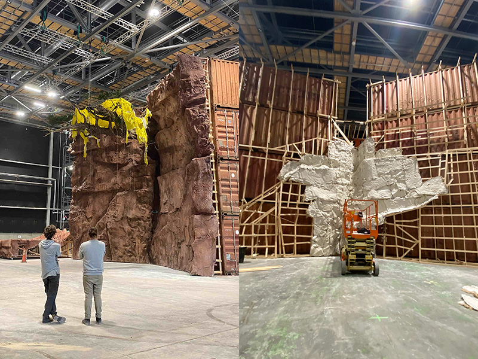
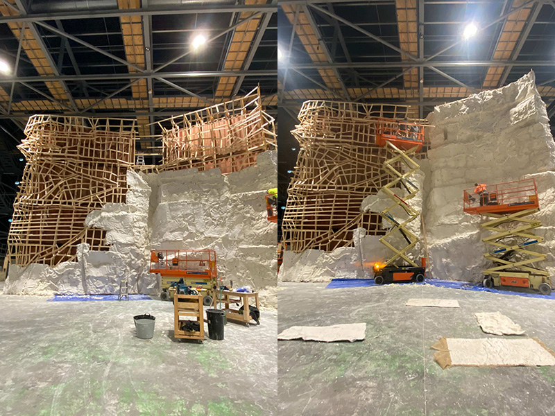
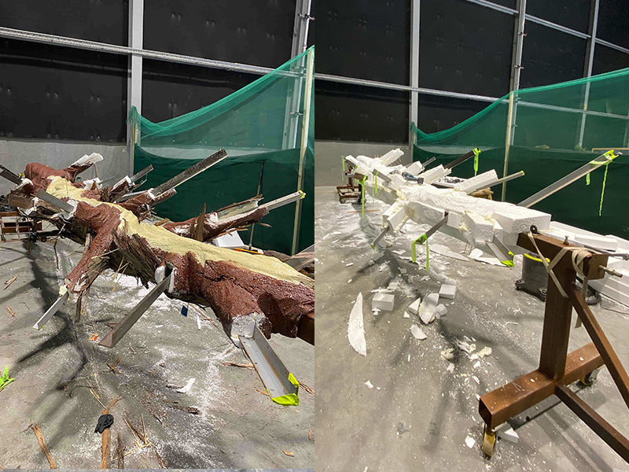
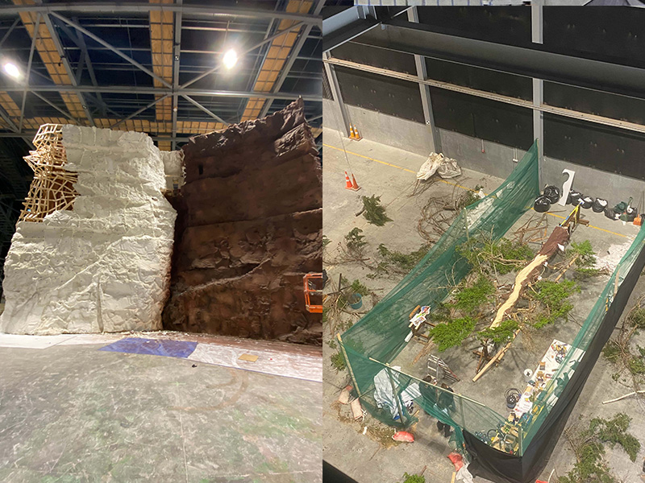
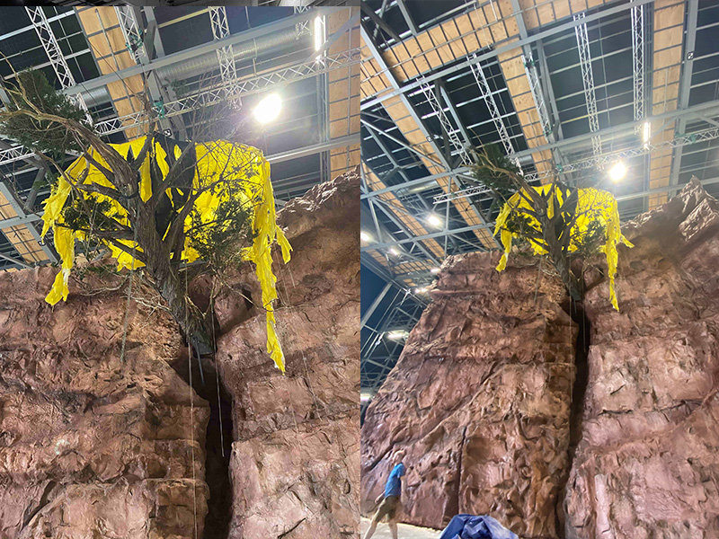
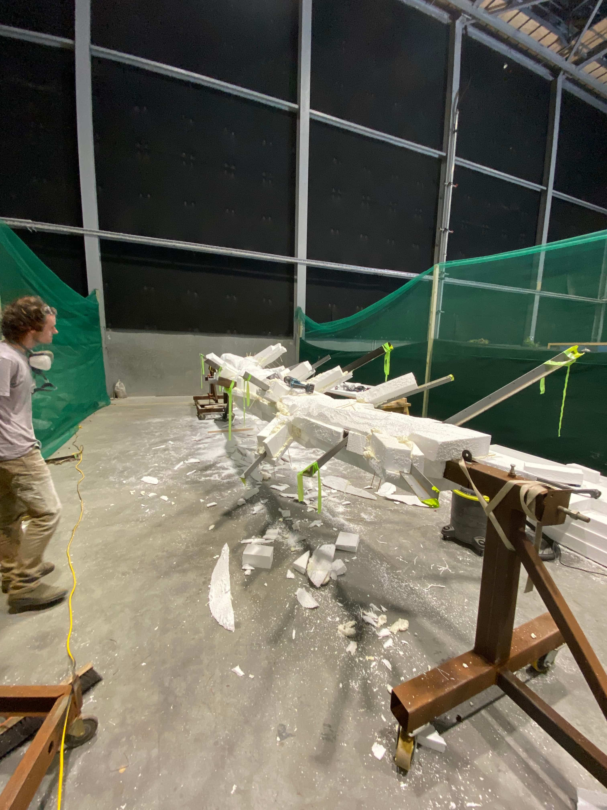
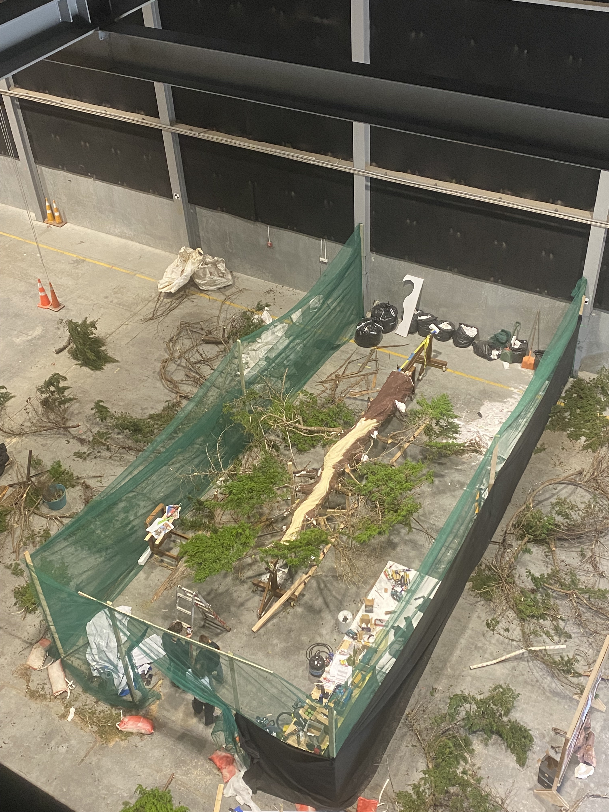
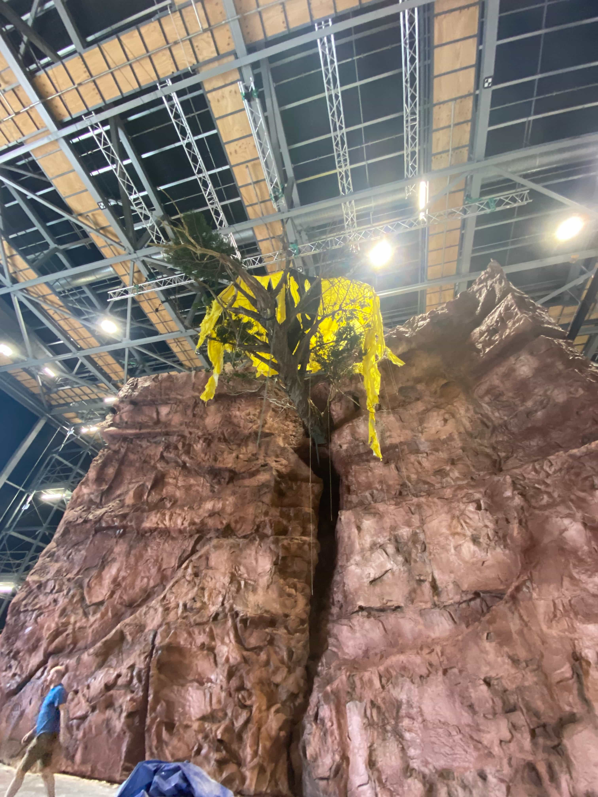

Canyon Feature Length (Post Production)
← BackI worked as the Art Department Runner on Canyon, an international film. As the runner I was responsible for sorting all materials for the art department on a tight budget/schedule.
Alongside my duties as a runner, due to tight budgeting I spent the majority of the job helping with the construction of the set, the greens department, and set decoration.
The film has been in post production for the last few years, but is scheduled to be released sometime in the next year. It was an incredibly valuable job that allowed for my first real experience working in set decoration & building.









